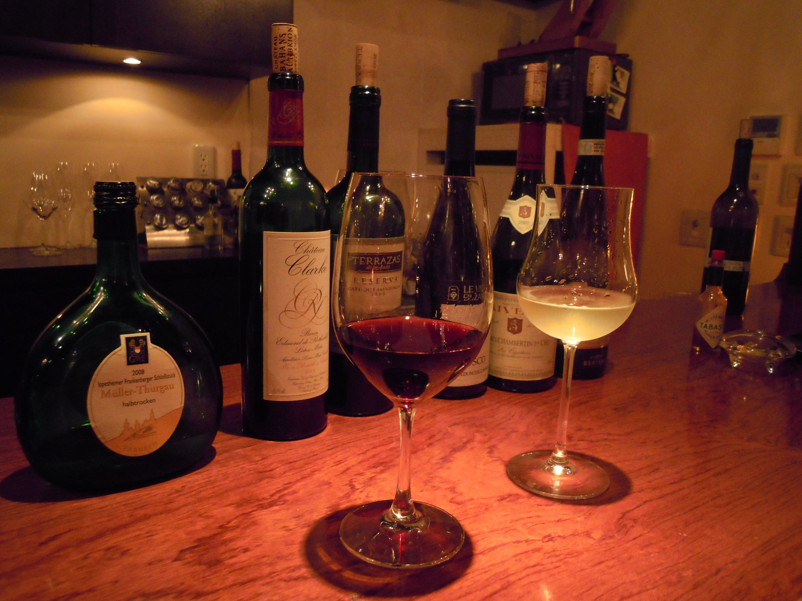
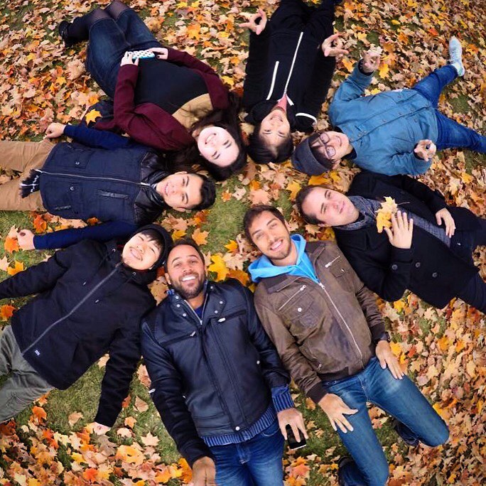
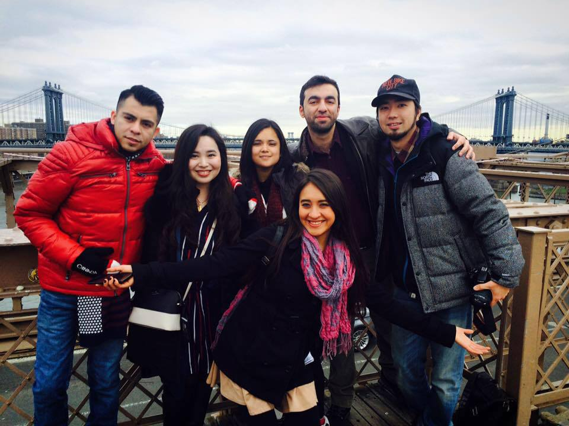
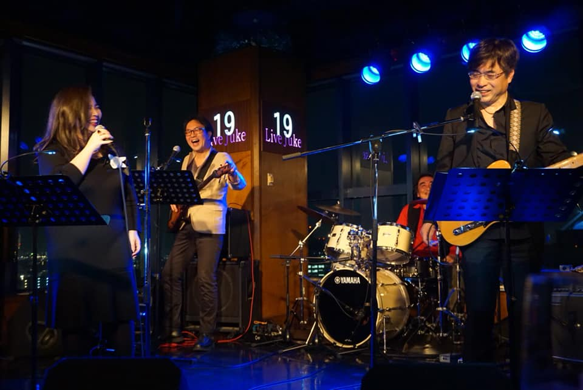

About
こんにちは！本多真依子です。
パソコンスクールHA＊NAに入校し、Webデザインの基礎を学びました。
初めてのWeb業界に不安もありますが、これからの将来をとても楽しみに思っています。
厳しくも楽しいWebの世界を歩むため、精進して参ります。
なぜ私がこの業界に足を踏み入れようと思ったのか？
ここまでたどり着くまで結構長かった・・
これまで私が歩んできた道のりを少し覗いて頂けると幸いです！
History
of My Life
Hiroshima
高校を卒業してすぐ酒類業界へ就職しました。入社９年にして、長年の夢であった海外留学を決意し、新たな一歩を踏むこととなりました。

Toronto/Canada
幼少期から憧れていた海外留学。
初海外・初留学。選んだ場所は、カナダ・トロントでした。
この街で出会ったかけがえのない国際色豊かな友人達は今でも繋がりが深く、SNSを通じて日々交流を深めています。

NewYork/America
ニューヨークという街が本当に存在しているのか、実のところ私の中で定かではありませんでした。映画でよく観る街並みを自らの足で赴き、自らの五感で感じたいと、その気持ちを抑えるのに必死でした。
トロントから夜行バスで約９時間、目覚めると広がっていた摩天楼。ロックフェラーセンター前に華やかに立つあのクリスマスツリー。憧れの街を友人と歩いたその感動を何度も味わいたくて、カナダから２度、帰国してからも訪れています。
ニューヨークの街の大半はアートで彩られています。その一つ一つにインスパイアされ自らの成長に繋がります。これから生きる上で欠かせない場所です。

Now
Hiroshima/Present time
2021年11月に半年間通ったパソコンスクールHA*NAを卒業し、現在はWebデザイナー・コーダーを目指し求職活動中です。プライベートでは歌手活動を趣味の一つとしつつ日々多方面の分野に目を向けながら学んでいます！
